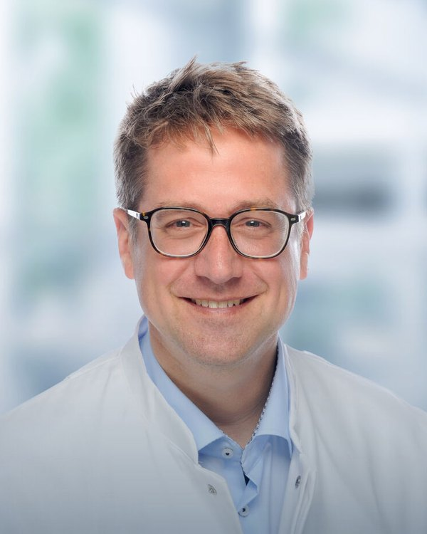
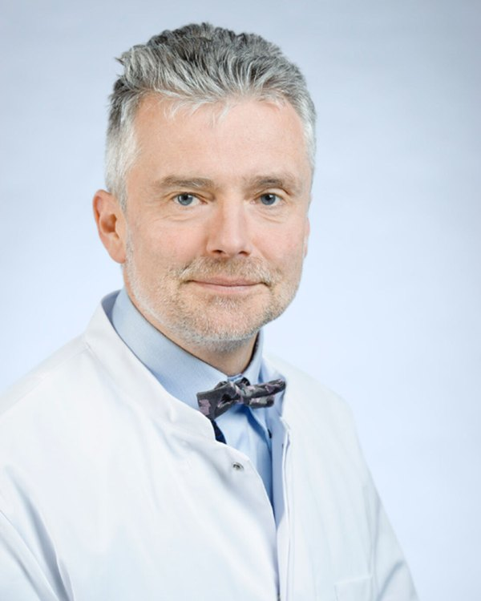
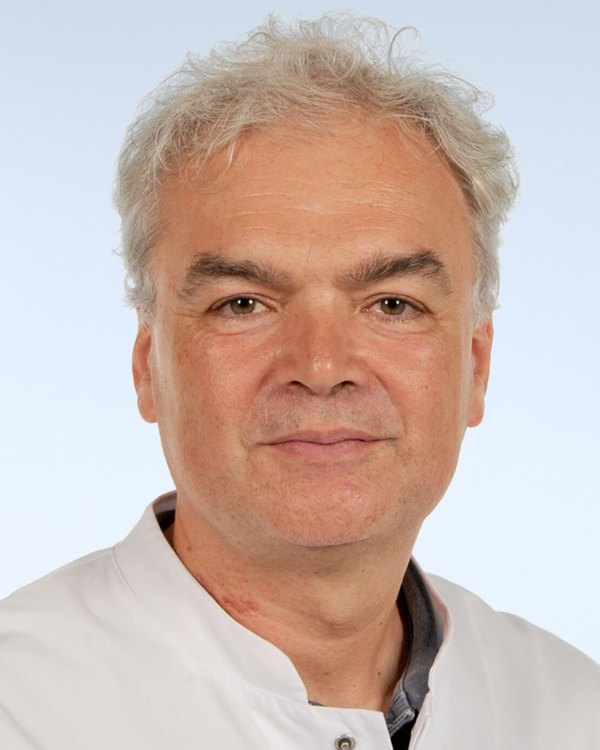
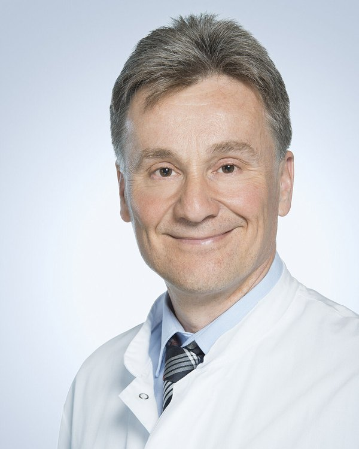
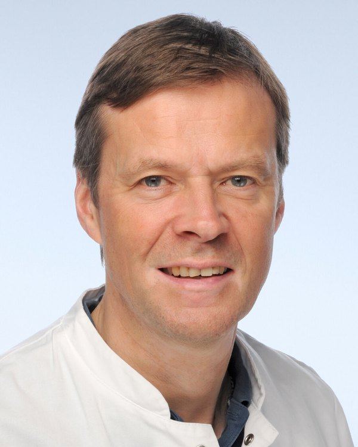

Leitung und Team
Hinter der Behandlung stehen viele Menschen: Ärztinnen und Ärzte, Pflegende, Therapeutinnen, Psychologinnen, Sozialarbeiterinnen und das Team in Sekretariat, Labor und Studienzentrale. Hier stellen sie sich vor.
Klinikleitung und Sektionsleitungen 5

Univ.-Prof. Dr. med. Max LiebauKlinikdirektorKindernephrologie, zystische Nierenerkrankungen 0241 80-88700

Univ.-Prof. Dr. med. Thorsten OrlikowskyLeiter der Sektion Neonatologie und pädiatrische Intensivmedizin 0241 80-89380

Univ.-Prof. Dr. med. Martin HäuslerLeiter der Sektion Neuropädiatrie und Sozialpädiatrie 0241 80-80161

Univ.-Prof. Dr. med. Udo KontnyLeiter der Sektion Pädiatrische Hämatologie, Onkologie und Stammzelltransplantation 0241 80-88892

Prof. Dr. med. Klaus TenbrockLeiter Translationale Pädiatrische Rheumatologie und Immunologie 0241 80-35486
Oberärztinnen und Oberärzte 15
RD
UD
SE
Dr. med. Sarah EssersOberärztinKinder-Intensivstation
KH
SK
PD Dr. med. Stefan KohlOberarzt, Leiter der KindernephrologieKindernephrologie, Station Ki07
OM
MM
AP
TR
ER
Dr. med. Elmar RoseOberarztKinder-Intensivstation
MS
AS
ST
TW
PD
Fachärztinnen und Fachärzte 21
LB
Dr. med. Lisa BartholoméFachärztin für Kinder- und Jugendmedizin
SB
Sabine BeckerFachärztin für Kinder- und Jugendmedizin
PB
Dr. med. Philipp BergerFacharzt für Kinder- und Jugendmedizin
AB
Dr. med. Anina BorgdorfFachärztin für Kinder- und Jugendmedizin
MB
Dr. med. Milian Johannes BrascheFacharzt für Kinder- und Jugendmedizin
JB
Dr. med. Janina BüschgensFachärztin für Kinder- und Jugendmedizin
SB
Dr. med. Sabine BusseFachärztin für Kinder- und Jugendmedizin
MD
Maria DimitriouFachärztin für Kinder- und Jugendmedizin
SA
Saeed El AhmadiehFacharzt für Kinder- und JugendmedizinKindernephrologie
CG
Christian Mathias GutbierFacharzt für Kinder- und Jugendmedizin
PH
Dr. med. Petra HolschbachFachärztin für Kinder- und Jugendmedizin
LI
Dr. med. Lara ImhofFachärztin für Kinder- und JugendmedizinHämatologie, Onkologie, Palliativmedizin 0241 80-89941
JK
Dr. med. Janna-Lina KerthFachärztin
DK
Dorit Gisela KüpferFachärztin für Kinder- und Jugendmedizin
EM
Dr. med. Eva Mießen-BellFachärztin für Kinder- und Jugendmedizin
EP
Evangelia-Vera PapagrigorakiFachärztin für Kinder- und Jugendmedizin
AP
Anne PfetzingFachärztin für Kinder- und Jugendmedizin
AQ
Dr. med. Annegret Barbara QuadeFachärztin für Kinder- und JugendmedizinNeuropädiatrie
AS
Dr. med. Anne SchobererFachärztin für Kinder- und Jugendmedizin
MS
Dr. med. Myriam StarkFachärztin für Kinder- und Jugendmedizin
KV
Dr. med. Kateryna VengerFachärztin für Kinder- und JugendmedizinGerinnungsstörungen, Sichelzellerkrankung 0241 80-89222
Ärztinnen und Ärzte in Weiterbildung 35
OA
Olga-Anastasiia AvvakumovaÄrztin in Weiterbildung
AB
Dr. med. Annamaria BallwegÄrztin in Weiterbildung
RS
Roberto Andres Bernal SigalaArzt in Weiterbildung
JB
Johannes BoyArzt in Weiterbildung
JB
Julius BöhmerArzt in Weiterbildung
LB
Lisa Marie BrökerÄrztin in Weiterbildung
DC
Daniel ClootsArzt in Weiterbildung
CC
Dr. med. Charlotte Leonie Constanze CreusenÄrztin in Weiterbildung
VD
Victoria DegenkolbeÄrztin in Weiterbildung
RD
Dr. med. Regina DörrÄrztin in Weiterbildung
HE
Dr. med. Hannah Louisa EchelmeyerÄrztin in Weiterbildung
MG
Dr. med. Martin Jakob GerhardusArzt in Weiterbildung
BG
Beyza GürsoyÄrztin in Weiterbildung
KH
Katharina HaddarÄrztin in Weiterbildung
DK
Denise KarahanÄrztin in Weiterbildung
EK
Elina KaramullinaÄrztin in Weiterbildung
MK
Maisha-Marie KoenigÄrztin in WeiterbildungHämangiom-Sprechstunde
SK
Dr. med. Sandra KörnerÄrztin in Weiterbildung
TL
Theresa LouisÄrztin in Weiterbildung
FL
Dr. med. Franziska Carolin LuppÄrztin in Weiterbildung
AM
Dr. rer. medic. Anna MakowskaÄrztin in WeiterbildungHämatoonkologisches Forschungslabor 0241 80-37692
GP
Giselle Guadalupe Monteagudo PinedaÄrztin in Weiterbildung
LO
Dr. med. Lea Oberste-LehnÄrztin in Weiterbildung
LO
Lena Sophie OlivierÄrztin in Weiterbildung
LO
Dr. med. Louise OppermannÄrztin in Weiterbildung
MP
Dr. med. univ. Miriam PachecoÄrztin in Weiterbildung
KP
Dr. med. Kathrin ProbstÄrztin in Weiterbildung
MQ
Meret QuanteÄrztin in Weiterbildung
LR
Dr. med. Laura RademacherÄrztin in Weiterbildung
MS
Marie SchiebelÄrztin in Weiterbildung
VS
Valea Marie SteinkampÄrztin in Weiterbildung
ET
Emel Aylin Kathrin ToktamisÄrztin in Weiterbildung
JP
Judith von PavelÄrztin in Weiterbildung
JW
Johanna WatsonÄrztin in Weiterbildung
AZ
Dr. med. M. Sc. Alischa Corinna ZiemendorffÄrztin in Weiterbildung
Pflegerische Stationsleitungen 7
Psychosozialer Dienst und Case Management 8
Dipl.-Soz. Natasha ChizariPsychosozialer Dienst 0241 80-88918
Dipl.-Psych. Britta KochPsychologin 0241 80-85584
Jana Brendelberger, M. Sc.Psychologin 0241 80-38093
Sabrina Goldyszewicz, B.A.Sozialarbeiterin und Sozialpädagogin 0241 80-38686
Melanie SchumacherDipl.-Sozialpädagogin, Sozialarbeiterin (FH) 0241 80-36975
Dipl.-Soz. Hedwig WennmachersPsychosozialer Dienst 0241 80-36722
Laura Illig, M.A.Klinisch-therapeutische Sozialarbeiterin, Onkologie
Cornelia SahlingCase Management Neonatologie 0241 80-37199
Therapie, Beratung und Labor 5
Martina KochLeitung Kinderlabor 0241 80-89209
Sekretariate, Studien und Verwaltung 8
Ana Isabel KohnkeSekretariat Prof. Liebau 0241 80-88701
Manuela QuadfliegSekretariat Prof. Kontny 0241 80-88892
Michaela KlüttgensSekretariat Prof. Orlikowsky, Famulaturen 0241 80-89380
Andrea DovermannOrganisation Hormonsprechstunde 0241 80-89227
Josef KockKlinikreferent 0241 80-86353
Anne GerardsMedizinische Dokumentation, Studien Onkologie 0241 80-36937
Bianca EllerStudienassistenz Onkologie 0241 80-38633
Lucie Chughtai StolfovaStudienassistenz Onkologie 0241 80-38633
Fotos: Platzhalter mit Initialen. Für den Livegang braucht jede Ärztin und jeder Arzt ein Porträt im einheitlichen Stil und eine schriftliche Einwilligung zur Veröffentlichung. [Fototermin organisieren] Pflegeteams stellen sich auf ihrer Stationsseite mit Gruppenfoto vor.